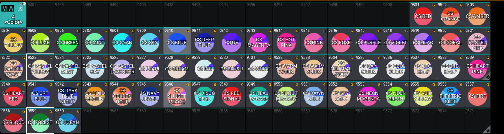
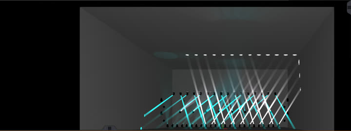
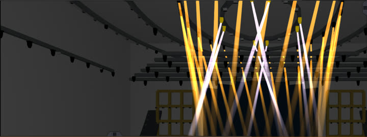
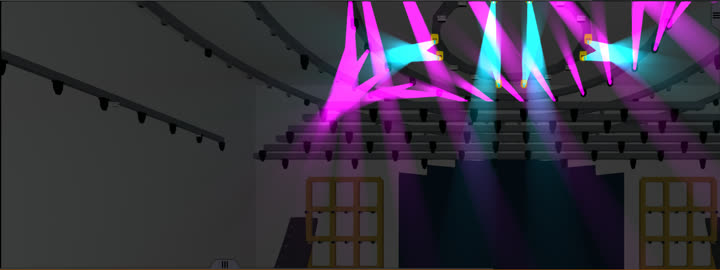
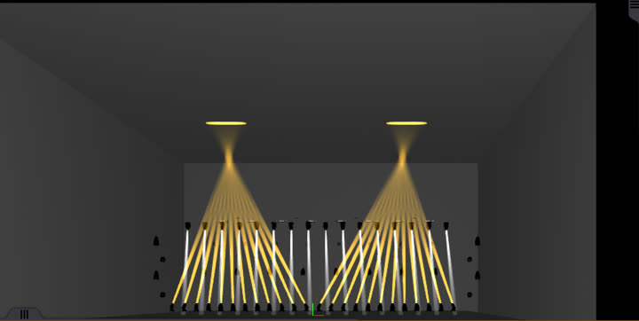
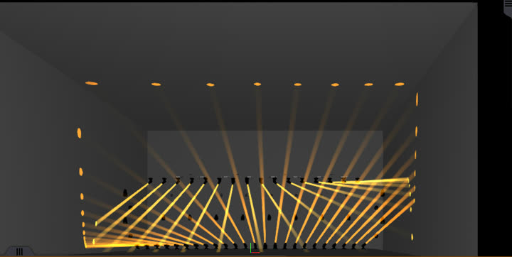
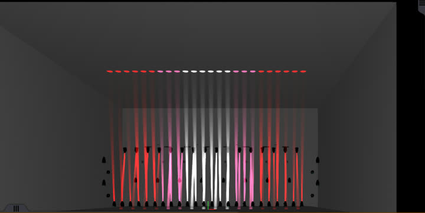

페이저 200 · 색 60 · 위상(MAtricks) 12. 설치기가 여러분 쇼의 장비로 범용 프리셋을 바로 만들어, 어떤 리그에서도 같은 모양으로 움직입니다.200 phasers · 60 colors · 12 MAtricks. The installer builds universal presets from the fixtures in your own show, so the looks work on any rig.
설치기 다운로드 (.xml)Download installer (.xml) 설치 방법How to install설치한 쇼의 장비로 만듭니다 — 밝기·무빙·빔은 범용(Universal), 색이 든 것은 Global(그 쇼의 장비 종류 전부, 풀 견본 색이 정확하게). 장비를 새 종류로 바꾸면 설치기를 한 번 더 실행하세요.Built from the fixtures in your show — dimmer, movement and beam presets are Universal; color presets are Global (every fixture type in that show, with correct pool swatch colors). After adding new fixture types, run the installer again.

먼저 쇼에 장비를 패치해 두세요. 설치기는 그 쇼의 장비로 프리셋을 만듭니다.Patch your fixtures first — the installer builds the presets from the fixtures in your show.
| onPC (macOS) | ~/MALightingTechnology/gma3_library/datapools/plugins/ |
| onPC (Windows) | C:\ProgramData\MALightingTechnology\gma3_library\datapools\plugins\ |
| 콘솔Console | USB 메모리에 gma3_library/datapools/plugins/ 폴더를 만들어 넣고 꽂기 → Plugins 풀 빈 칸에서 Import → 드라이브 USBCreate gma3_library/datapools/plugins/ on a USB stick, put the file there, plug it in → Import into an empty Plugins pool slot → choose the USB drive |
Import Plugin 99 'MA3_FX_PACK_INSTALLER' /NoConfirmation Plugin 99
Master 3.15 At BPM 120
Fixture 101 Thru 108 At Preset 2.9502 At Preset 2.<your position> MAtricks 9505
DIM STROBE · DIM FLICKER 등은 BPM 이 높으면 초당 3회를 넘습니다. 관객·출연자 광과민을 생각해 쓰세요.DIM STROBE, DIM FLICKER etc. can exceed 3 flashes per second at high BPM. Consider photosensitive audiences and performers.빔 다발이 공중에 모양(그물·아치·터널·왕관·햇살)을 그리는 효과. 리그의 링·줄 위치를 읽어 계산하므로, 콘솔에서 직접 계산하는 설치기로 다음 판에 담습니다.Effects where beams draw a shape in the air — nets, arches, tunnels, crowns, sun rays. They are computed from your rig's rings and rows, so they will ship in v2 with an on-console generator.






설치기 파일 하나면 됩니다. 묶음에는 설치기와 한글·영문 안내가 들어 있습니다.The installer file is all you need. The bundle adds Korean/English instructions.
MA3_FX_PACK_INSTALLER.xml · 353 KB MA3_FX_Pack_v1.zip| 확인한 환경Tested | 결과Result |
|---|---|
| grandMA3 onPC 2.4.2 (macOS) | 장비 7종 412대 쇼에 272/272 설치 · 3D 작동 확인272/272 installed into a 7-type / 412-fixture show · verified in 3D |
| 저장값 점검Stored values | 260개 내보내 확인(범용 · 전환 · 단계 폭 · 섞인 값 없음)All 260 presets exported and checked (universal, transitions, step widths, no leaked values) |
| 콘솔 실기 · Windows onPCConsole hardware · Windows onPC | 아직 확인 못 함Not tested yet |